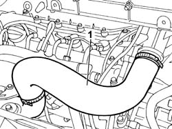
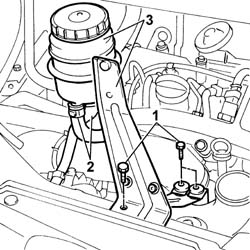
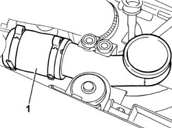
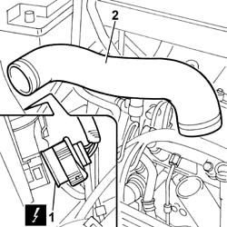
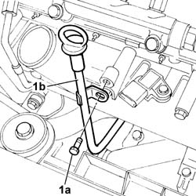
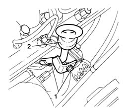
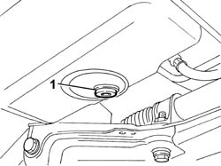
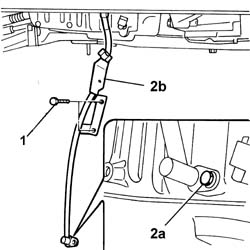

1084A16 OIL DIP STICK PIPE - R R
- Path
- Procedures > 10 ENGINE UNIT > 1084 ENGINE LUBRICATION SYSTEM > 1084A INDICATORS/CHECK DEVICES > 1084A16 OIL DIP STICK PIPE - R R
- Kind
- repair procedure (removal / refitting; the operation number is the code)
- Applies to
- engines: 2.0 JTD 8V, 2.3 JTD 16V, 2.8 JTD 8V; all production periods
- Interactive page
- https://sloeber94.github.io/elrnDB-fDct/en/#/244000923
Applies to: engines: 2.3 JTD 16V; all production periods
 Removing
Removing
 Refitting
Refitting1. Remove the air delivery sleeve to the air-air heat exchanger (intercooler).

Applies to: engines: 2.3 JTD 16V; all production periods
1. Undo the bolts securing the power steering fluid reservoir bracket.
2. Disconnect the oil pipes from the reservoir.
3. Remove the power steering fluid reservoir complete with bracket.
- Seal both pipes with plugs.

Applies to: engines: 2.3 JTD 16V; all production periods
1. Remove the second section of the air delivery sleeve to the air-air heat exchanger (intercooler).

Applies to: engines: 2.3 JTD 16V; all production periods
1. Disconnect the electrical connection of the right front light cluster.
 | Description | Connector |
|---|---|---|
1 | Right headlamp | F011 |
2. Disconnect the collars at both ends and remove the air pipe from intercooler to intake manifold.

Applies to: engines: 2.3 JTD 16V; all production periods
1. Undo retaining bolt (1a) and remove the engine oil dipstick (1b).

Applies to: engines: 2.3 JTD 16V; all production periods
Refitting
Removing- Fit the engine oil dipstick pipe and tightenn the retaining bolt.
- Fit the air pipe from intercooler to intake manifold and connect the collars to both ends.
- Connect the electrical connection of the right front light cluster.
| Description | Connector |
|---|---|---|
. | Right headlamp | F011 |
- Fit the second section of the air delivery sleeve to the air-air heat exchanger (intercooler).
- Fit the power steering fluid reservoir complete with bracket.
- Connect the fluid pipes to the reservoir and tighten the power steering system fluid reservoir bracket bolts.
- Fit the air delivery sleeve to the air-air heat exchanger (intercooler).
- Fill the power steering system with appropriate fluid.
Applies to: engines: 2.8 JTD 8V; all production periods
Removing
RefittingSee in Op. 1048B14
See in Op. 1048B22
1. Undo the fixing bolts.
2. Remove the oil dipstick pipe and move the brackets on the fastenings aside.

Applies to: engines: 2.8 JTD 8V; all production periods
Refitting
Removing- Position the engine oil dipstick pipe in its housing.
- Position the brackets on the fastenings.
- Tighten the fixing bolts.
See in Op. 1048B22
See in Op. 1048B14
Applies to: engines: 2.0 JTD 8V; all production periods
Removing
RefittingSee in Op. 1060F50
Op. 7055B54 UNDER-ENGINE GUARD - R R
- Position a container underneath the engine to collect the engine oil.
1. Undo the drain plug in the crankcase sump and leave the oil to drain into the container.

Applies to: engines: 2.0 JTD 8V; all production periods
1. Undo the engine oil dipstick pipe upper fixing bolts.
- Raise the lift.
2. Undo the lower bolt (2a) and remove the engine oil dipstick pipe (2b).

Applies to: engines: 2.0 JTD 8V; all production periods
Refitting
Removing- Fit the engine oil dipstick pipe.
- Tighten the engine oil dipstick pipe lower fixing bolt to torque.
- Lower the lift.
- Tighten the engine oil dipstick pipe upper fixing bolts to torque.
- Clean the drain plug and tighten it to the recommended torque.
- Lubricate the new oil filter seal with engine oil and tighten it fully.
- Refill the lubrication circuit with the recommended oil.
 | Description | Qty. | Component | Type | Classification |
|---|---|---|---|---|---|
. | SELENIA TURBODIESEL | 5.25 Litri | ENGINE LUBRICATION SYSTEM | Oil | SAE10W40-ACEA B3-API CD |
Op. 7055B54 UNDER-ENGINE GUARD - R R
See in Op. 1060F50